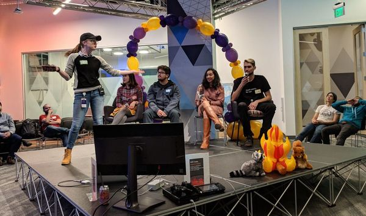

Ryan Tran
Hello! My name is Ryan Tran, and I am a Biology graduate from the University of California, Riverside, with a strong interest in optometry and patient-centered healthcare.
I have gained valuable clinical experience working as an optometric assistant at Kvision Optometry and Little Saigon Optometry. My responsibilities included performing preliminary eye examinations, operating diagnostic equipment such as autorefractors, keratometers, and retinal imaging systems, and assisting optometrists throughout patient visits.
In addition to my optometry experience, I participated in the COPE Health Scholars program at Kaiser Permanente, where I worked alongside healthcare professionals in various clinical departments. These experiences strengthened my communication, teamwork, and patient care skills.
My long-term goal is to become an optometrist and provide accessible, high-quality eye care to diverse communities. I am especially passionate about helping patients overcome language barriers and ensuring they feel comfortable and informed throughout their healthcare experience.
Outside of my professional interests, I enjoy learning new skills, exploring technology, and continuing to develop personally and professionally.
Experience
Hospice Caregiver
• Assisted patients with daily living activities, mobility, feeding, and comfort measures.
• Communicated patient needs to hospice nurses and healthcare staff.
• Provided emotional support to patients and families.
• Followed HIPAA and infection control protocols.
Food Service Associate
• Prepared food and maintained food safety standards.
• Operated cash registers and processed transactions.
• Cleaned tables and maintained the dining area.
Server and Cashier
• Assisted customers with orders and menu selections.
• Processed payments and handled transactions.
• Worked with kitchen staff to ensure efficient service.
Server and Host
• Welcomed guests and coordinated seating arrangements.
• Provided customer service in a fast-paced environment.
• Collaborated with coworkers to maintain efficient operations.
Team Member
• Assisted customers with questions and product locations.
• Supported daily store operations and team activities.
• Maintained a clean and organized retail environment.
Education
University of California, Riverside
Portfolio


